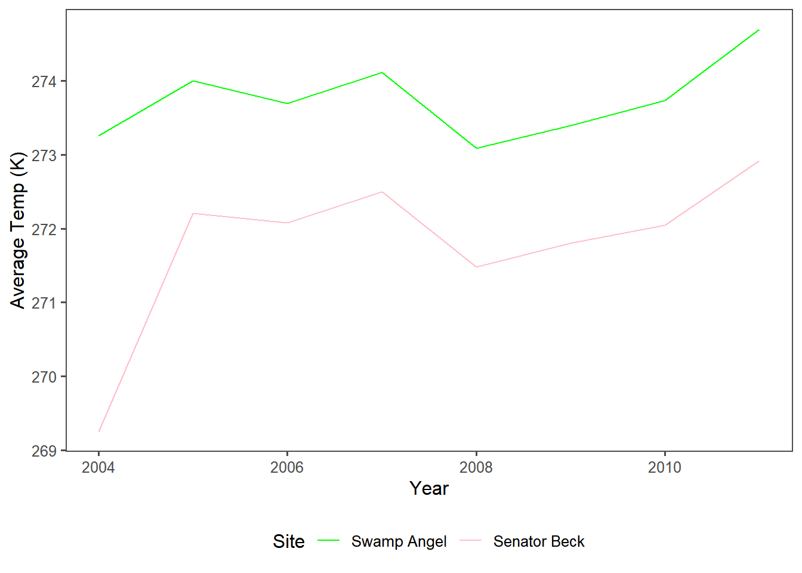
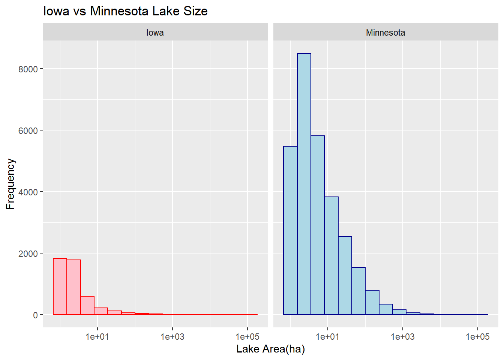
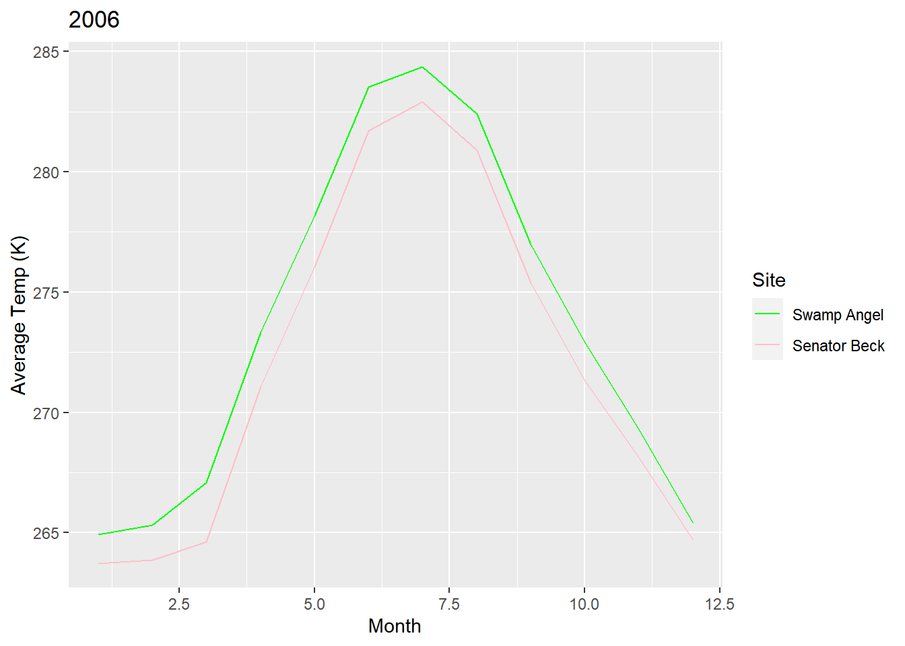
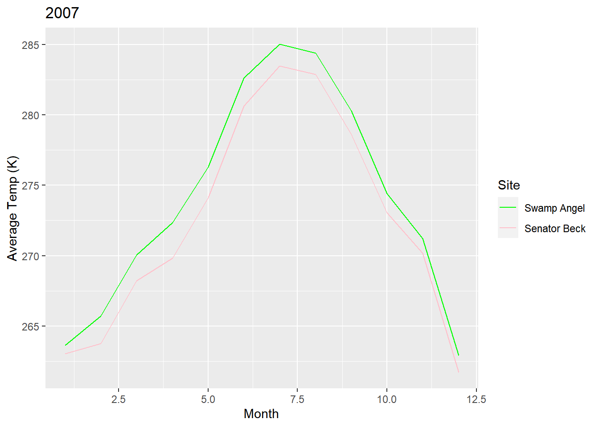
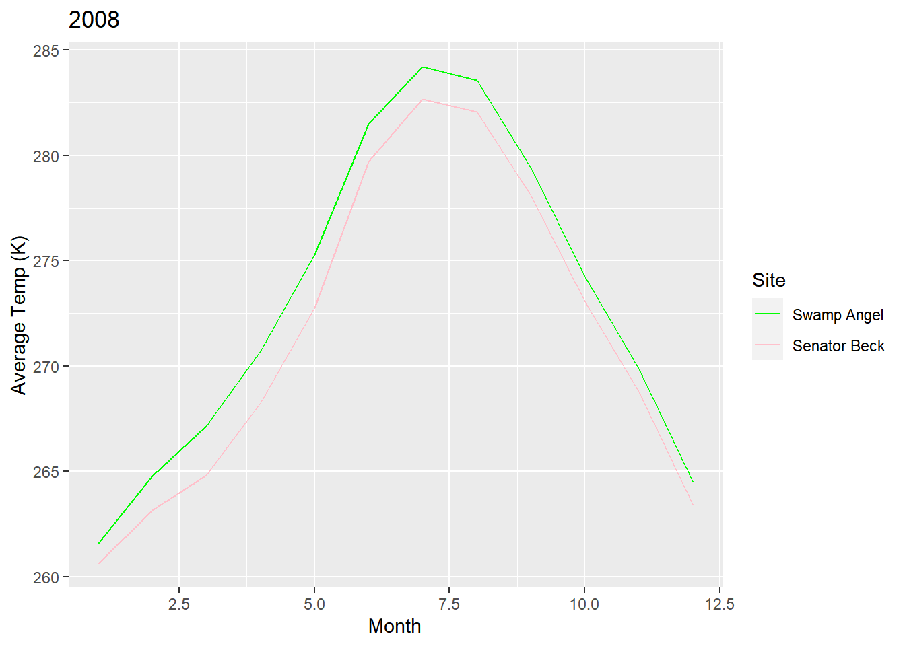
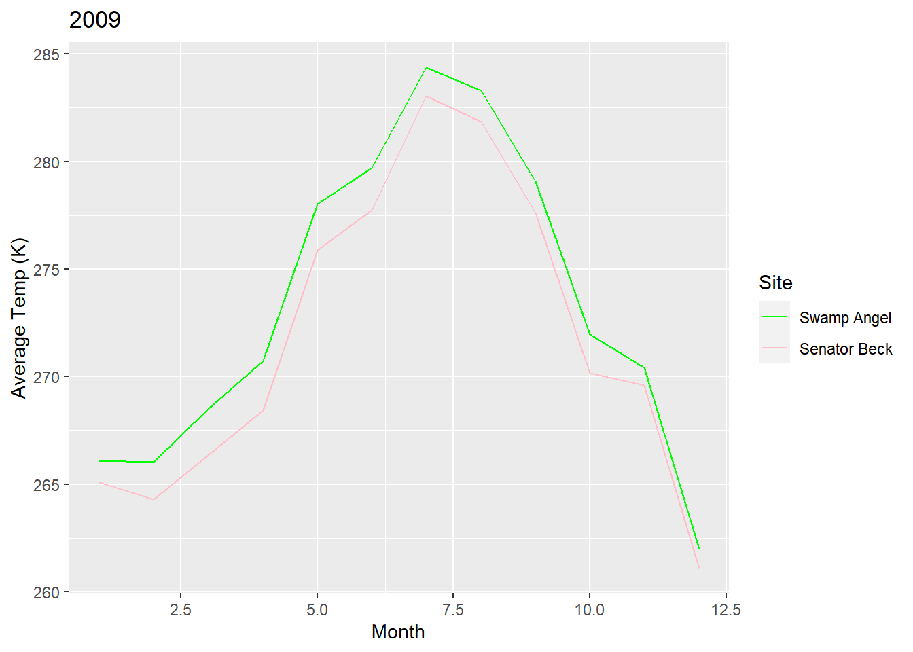
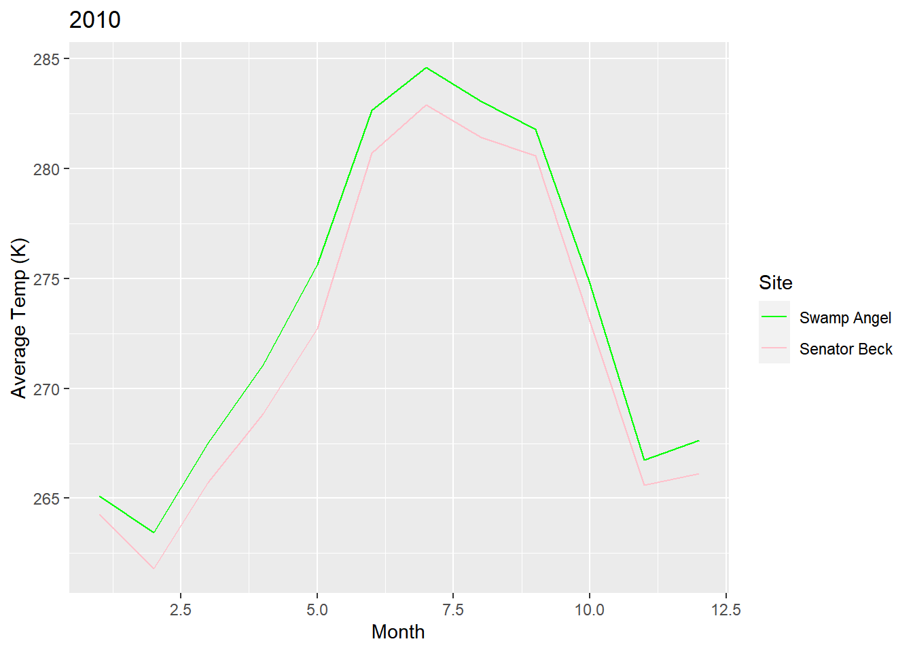

Chapter 3 Assignment:
- Extract the meteorological data URLs. Here we want you to use the
rvestpackage to get the URLs for theSASP forcingandSBSP_forcingmeteorological datasets.
site_url <- 'https://snowstudies.org/archived-data/'
webpage <- read_html(site_url)
links <- webpage %>%
html_nodes('a') %>%
.[grepl('forcing',.)] %>%
html_attr('href')- Download the meteorological data. Use the
download_fileandstr_split_fixedcommands to download the data and save it in your data folder. You can use a for loop or a map function.
splits <- str_split_fixed(links,'/',8)
dataset<- splits[,8]
Q2_file_names <- paste0('data/',dataset)
for(i in 1:2){
download.file(links[i],destfile=Q2_file_names[i])
}
downloaded <- file.exists(Q2_file_names)
evaluate <- !all(downloaded)- Write a custom function to read in the data and append a site column to the data.
library(pdftools)
headers <- pdf_text('https://snowstudies.org/wp-content/uploads/2022/02/Serially-Complete-Metadata-text08.pdf') %>%
readr::read_lines(.) %>%
trimws(.) %>%
str_split_fixed(.,'\\.',2) %>%
.[,2] %>%
.[1:26] %>%
str_trim(side = "left")our_meteor_reader <- function(Q3_file){
name = str_split_fixed(Q3_file,'/',2)[,2]
name2 = str_split_fixed(Q3_file,'/',4)[,2]
df <- read.delim(Q3_file,header = FALSE, sep = "", col.names = headers, skip = 4) %>%
select(1:14) %>%
mutate(site = name2)
} - Use the
mapfunction to read in both meteorological files. Display a summary of your tibble.
meteor_data_full <- map_dfr(Q2_file_names,our_meteor_reader)
summary(meteor_data_full)## year month day hour minute
## Min. :2003 Min. : 1.000 Min. : 1.00 Min. : 0.00 Min. :0
## 1st Qu.:2005 1st Qu.: 3.000 1st Qu.: 8.00 1st Qu.: 5.75 1st Qu.:0
## Median :2007 Median : 6.000 Median :16.00 Median :11.50 Median :0
## Mean :2007 Mean : 6.472 Mean :15.76 Mean :11.50 Mean :0
## 3rd Qu.:2009 3rd Qu.: 9.000 3rd Qu.:23.00 3rd Qu.:17.25 3rd Qu.:0
## Max. :2011 Max. :12.000 Max. :31.00 Max. :23.00 Max. :0
## second precip..kg.m.2.s.1. sw.down..W.m.2. lw.down..W.m.2.
## Min. :0 Min. :0.000e+00 Min. :-9999.000 Min. :-9999.0
## 1st Qu.:0 1st Qu.:0.000e+00 1st Qu.: -3.510 1st Qu.: 173.4
## Median :0 Median :0.000e+00 Median : -0.344 Median : 231.4
## Mean :0 Mean :3.838e-05 Mean :-1351.008 Mean :-1325.7
## 3rd Qu.:0 3rd Qu.:0.000e+00 3rd Qu.: 294.900 3rd Qu.: 272.2
## Max. :0 Max. :6.111e-03 Max. : 1341.000 Max. : 365.8
## air.temp..K. windspeed..m.s.1. relative.humidity.... pressure..Pa.
## Min. :242.1 Min. :-9999.000 Min. : 0.011 Min. :63931
## 1st Qu.:265.8 1st Qu.: 0.852 1st Qu.: 37.580 1st Qu.:63931
## Median :272.6 Median : 1.548 Median : 59.910 Median :65397
## Mean :272.6 Mean : -790.054 Mean : 58.891 Mean :65397
## 3rd Qu.:279.7 3rd Qu.: 3.087 3rd Qu.: 81.600 3rd Qu.:66863
## Max. :295.8 Max. : 317.300 Max. :324.800 Max. :66863
## specific.humidity..g.g.1. site
## Min. :0.000000 Length:138336
## 1st Qu.:0.001744 Class :character
## Median :0.002838 Mode :character
## Mean :0.003372
## 3rd Qu.:0.004508
## Max. :0.014780- Make a line plot of mean temp by year by site (using the
air temp [K]variable). Is there anything suspicious in the plot? Adjust your filtering if needed.
temp_yearly <- meteor_data_full %>%
filter(year > 2003) %>%
group_by(year, site) %>%
summarize(mean_temp = mean(air.temp..K., na.rm=T))
ggplot(temp_yearly, aes(x = year, y = mean_temp, color=site)) +
geom_line() +
ggthemes::theme_few() +
ggthemes::scale_color_few() +
labs(x = "Year",
y = "Average Temp (K)",
color="Site") +
scale_color_manual(labels = c("Swamp Angel", "Senator Beck"), values=c("green", "pink")) +
theme(legend.position = "bottom")

Figure 3.1: Figure 1: Lines of the graph represent a time series of average monthly temperature in Kelvin at the Swamp Angel Study Plot and the Senator Beck Study Plot. The year 2003 was not recorded due to incomplete datasets.
- Write a function that makes line plots of monthly average temperature at each site for a given year. Use a for loop to make these plots for 2005 to 2010. Are monthly average temperatures at the Senator Beck Study Plot ever warmer than the Snow Angel Study Plot? Hint: https://ggplot2.tidyverse.org/reference/print.ggplot.html
Based on the plots, it appears that the largest differences in temperature occurs during the summer months and the smallest change occurs in fall months. Although, the Senator Beck Study plot is never warmer than the Swamp Angel Study Plot.
lineplotter <- function(meteor_data_full, year) {
temp_monthly <- meteor_data_full %>%
group_by(month, year, site) %>%
summarize(mean_temp = mean(air.temp..K.)) %>%
filter (yr == year)
plots2 <- ggplot(temp_monthly, aes(x = month, y= mean_temp, color= site)) +
geom_line() +
labs(x = "Month",
y= "Average Temp (K)",
title= temp_monthly$year,
color= "Site") +
scale_color_manual(labels = c("Swamp Angel", "Senator Beck"), values= c("green", "pink"))
print(plots2)
}
years <- c(2005, 2006, 2007, 2008, 2009, 2010)
for (yr in years) {
lineplotter(meteor_data_full, year)
}
Bonus: Make a plot of average daily precipitation by day of year (averaged across all available years). Color each site.
Bonus #2: Use a function and for loop to create yearly plots of precipitation by day of year. Color each site.